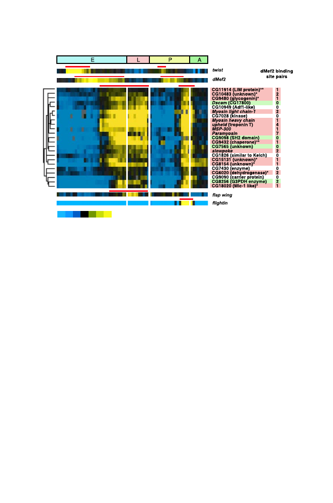

326
11 Measuring Expression of Genome Information
Expression level
<0.25 0.33 0.5 1
2
3 >4
Fig. 11.11.
[This figure also appears in the color insert.] Expression of terminally
differentiated muscle genes during
Drosophila
development. Graphical conventions
are similar to Fig. 11.10, except that yellow indicates high levels of expression and
blue indicates low levels of expression. The multicolored ribbon at the top spans the
times corresponding to embryonic (E), larval (L), pupal (P), or adult (A) stages of
development. Expression patterns for transcription factors
twist
and
dMef
2, known
regulators of muscle development, are indicated immediately below the developmen-
tal stage indicator. Their expression prior to the onset of expression of muscle genes
was anticipated. Reprinted, with permission, from Arbeitman MN et al. (2002)
Sci-
ence
297:2270-2275. Copyright 2002 American Association for the Advancement of
Science.
classes: those with characteristic patterns of B-cell germinal centers or those
similar to activated B-cells.
The clinical outcomes for patients treated by multiagent chemotherapy
were monitored and compared with the gene expression patterns of the corre-
sponding biopsy samples. Those patients having lymphomas with expression
patterns like germinal center B-cells had substantially higher 5 year survival
rates (76%) than did patients having lymphomas with the activated B-cell pat-
terns (16%). This expression study identified subclasses of B-cell lymphomas
that had not previously been recognized, and the expression patterns of these
subclasses were correlated with distinct clinical outcomes.